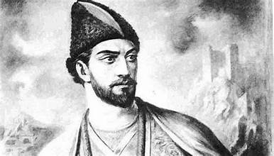

შოთა რუსთაველი

შოთა რუსთაველი, რუსთველი (*დაახ. 1160/65 - ? ) — XII საუკუნის დიდი ქართველი პოეტი და მოაზროვნე, ავტორი საქვეყნოდ ცნობილი პოემისა „ვეფხისტყაოსანი“. მსოფლიოს მრავალ ლიტერატურათმცოდნეთა მიერ მიიჩნევა შუასაუკუნეების მსოფლიო ლიტერატურის ერთ-ერთ უმნიშვნელოვანეს წარმომადგენლად.